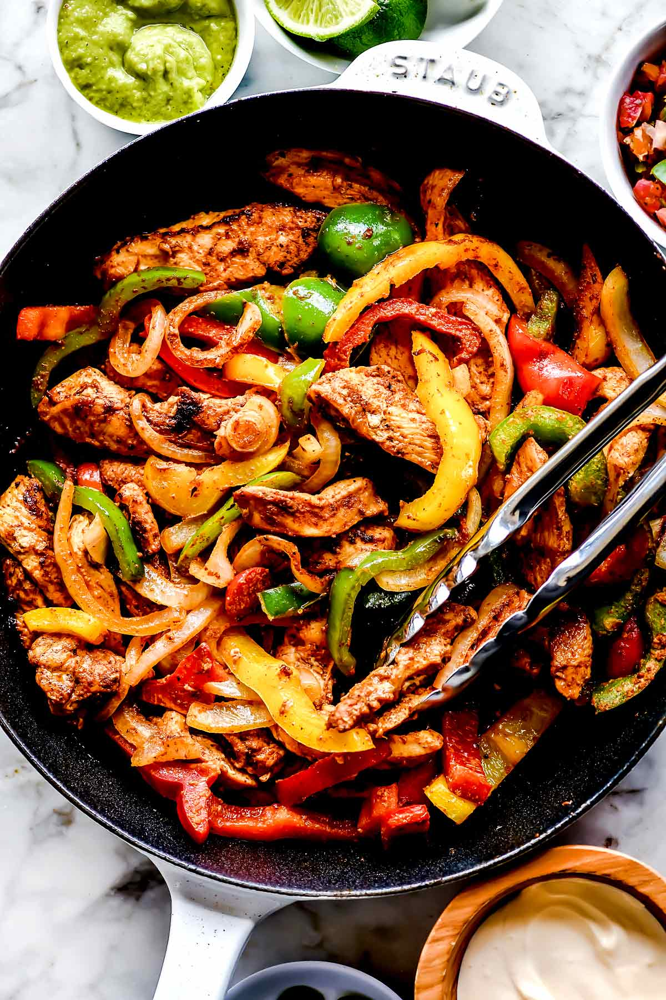

Fajitas

Description
This easy chicken fajitas recipe with a homemade, simple fajita seasoning
mix flavors lean chicken breast, onion, and a rainbow of bell peppers
that”s juicy and delicious and ready to eat in just about 30
minutes.
Ingredients
- Boneless, skinless chicken breasts
- Bell peppers of any color including green, red, yellow, and orange
- Yellow or white onion
- From-scratch fajita seasoning mix (see below)
- Canola oil
- Limes
- Flour tortillas
- Pico de gallo
- Avocado salsa verde
- Guacamole
- Mexican crema or sour cream
Steps
- Chop up everything
- Fry everything until cooked, add seasoning half way through
- Microwave wraps for 10 seconds
- Put guacamole, salsa and sour cream on the table
- Serve in sizzling pan and make fajitas at the table!